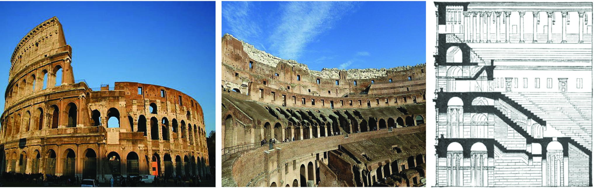
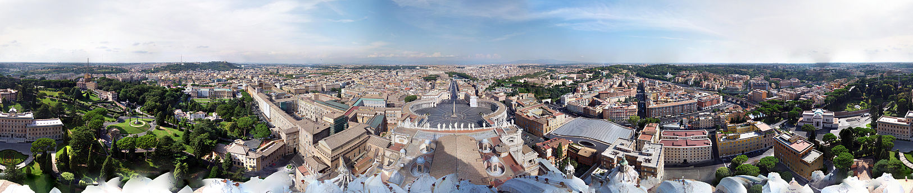
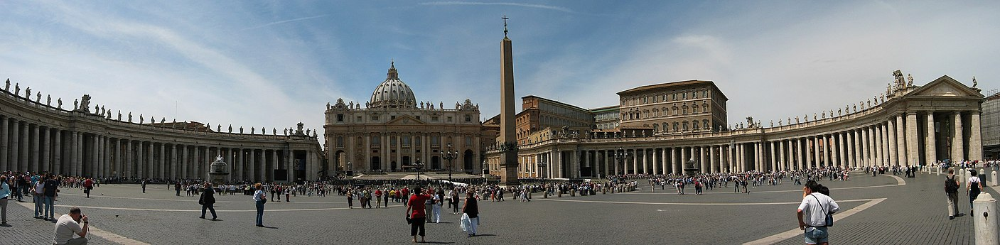

Top1 City View: Colosseum

The Colosseum is an oval amphitheatre in the centre of the city of Rome, Italy, just east of the Roman Forum. It is the largest ancient amphitheatre ever built, and is still the largest standing amphitheatre in the world, despite its age. Construction began under the emperor Vespasian (r. 69–79 AD) in 72 and was completed in 80 AD under his successor and heir, Titus (r. 79–81). Further modifications were made during the reign of Domitian (r. 81–96).The three emperors who were patrons of the work are known as the Flavian dynasty, and the amphitheatre was named the Flavian Amphitheatre by later classicists and archaeologists for its association with their family name (Flavius).
Official Website link for Colosseum
Top1 City View: Vatican City


Vatican City, officially Vatican City State, is an independent city-state, microstate and enclave within Rome, Italy. It became independent from Italy in 1929 with the Lateran Treaty, and it is a distinct territory under "full ownership, exclusive dominion, and sovereign authority and jurisdiction" of the Holy See, itself a sovereign entity of international law, which maintains the city state's temporal, diplomatic, and spiritual independence. With an area of 49 hectares (121 acres) and a 2019 population of about 453, it is the smallest state in the world both by area and population. As governed by the Holy See, Vatican City State is an ecclesiastical or sacerdotal-monarchical state ruled by the Pope who is the bishop of Rome and head of the Catholic Church.
Vatican City contains religious and cultural sites such as St. Peter's Basilica, the Sistine Chapel, and the Vatican Museums. They feature some of the world's most famous paintings and sculptures. The unique economy of Vatican City is supported financially by donations from the faithful, by the sale of postage stamps and souvenirs, fees for admission to museums, and sales of publications. Vatican City has no taxes and items are duty-free.